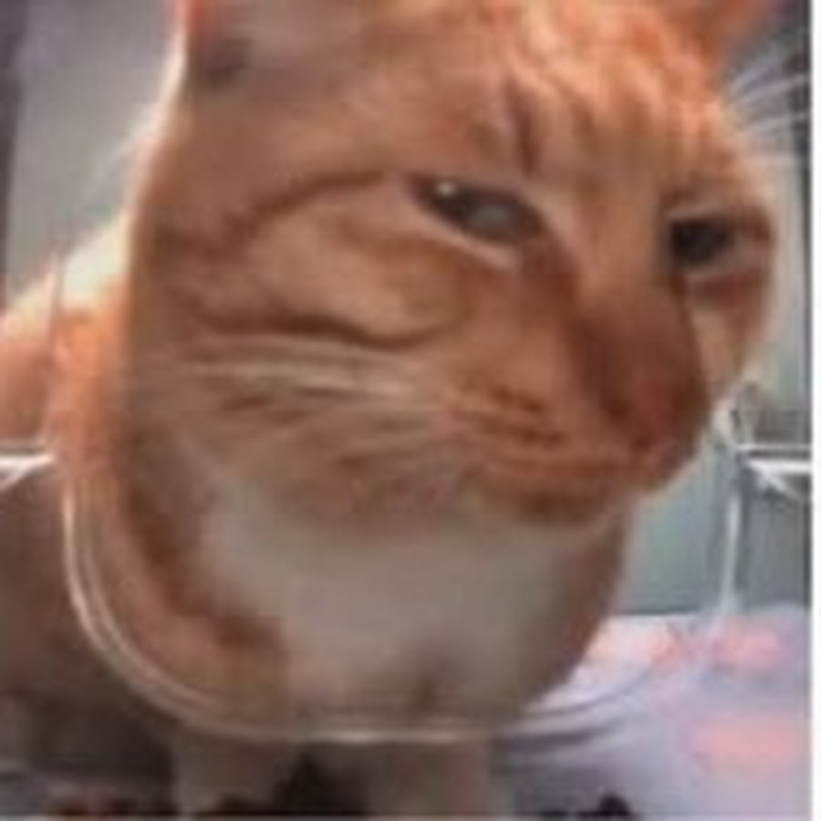
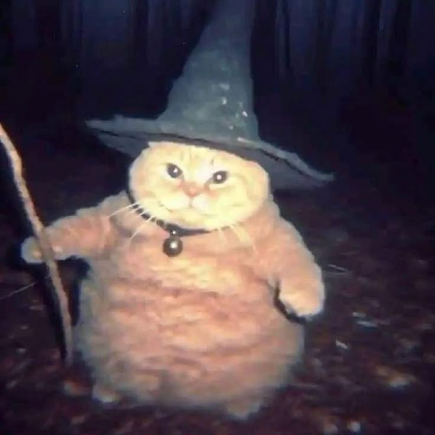

Мои интересы
Увлекаюсь видео-играми, прослушиванием музыки, просмотром фильмов и сериалов, иногда читаю книги.
Я, как и многие другие люди, люблю хорошо и весело проводить время со своими друзьями!

Меня зовут Гузенко Валентин, я являюсь студентом 3 курса физико-технического факультета, направление: "Информатика и Вычислительная Техника" (ИВТ), учась в Донецком Государсвтенном (ДОНГУ).
Ранее учился писать код на таких языках программирования как: C#, C++, assembler, pyton, sql, и другие.
Ныне обучаяюсь писать сайты на HTML.
Данный сайт является моей первой лабораторной работой по курсу Web-программирования, так что прошу быть не слишком строгим на мой счёт :)
Увлекаюсь видео-играми, прослушиванием музыки, просмотром фильмов и сериалов, иногда читаю книги.
Я, как и многие другие люди, люблю хорошо и весело проводить время со своими друзьями!
Мягко говоря не любитель выставлять свои фотографии напоказ, особенно на просторах интернета.
Всё, что попадет в интернет, остаётся там навсегда
—
В особенности поэтому я решил отойти от задания (да простит меня Гукай Алексей и Бондаренко Виктория), и показать вам на месте своей фотографии миленького котика :)
